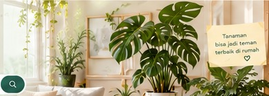
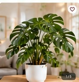

Cari tanaman sesuai kebutuhan, gaya hidup, dan kondisi rumahmu.
⌕
Populer:

🚚 Pengiriman Cepat& Aman
🛡️ Tanaman BerkualitasTerkurasi
🌿 Tips & KomunitasPecinta Tanaman
♙ Konsultasi AhliTanaman
Kategori Tanaman
Pilih kategori yang sesuai dengan kebutuhanmu.
🌿
Tanaman sehat, rumah lebih hidupDapatkan rekomendasi tanaman terbaik sesuai dengan gaya hidup dan kebutuhanmu.
Beranda › Kategori › Indoor
Kategori Tanaman
Temukan tanaman terbaik untuk ruang dalam rumahmu.
Kategori TanamanTemukan tanaman terbaik untuk ruang dalam rumahmu.
Beranda › Kategori › Indoor › Monstera Deliciosa

Monstera Deliciosa
Tanaman hias indoor yang populer dengan daun berlubang yang unik dan estetik.
★ 4.8 (120 ulasan)Pet-Friendly
Rp 85.000
● Stok Tersedia
1
☼ CahayaCahaya terang tidak langsung
💧 Penyiraman2–3x seminggu
⌂ Indoor / OutdoorLebih cocok indoor
❀ Aman untuk HewanAman untuk kucing dan anjing
Tentang Monstera Deliciosa
Monstera Deliciosa adalah tanaman hias tropis yang terkenal dengan daun berlubang khasnya. Tanaman ini cocok diletakkan di dalam ruangan dengan cahaya tidak langsung.
Artikel & Tips Tanaman
Temukan tips sederhana agar tanamanmu tetap sehat.
5 Tanaman untuk Pemula
Pilih tanaman yang mudah dirawat untuk memulai koleksi.
Tanaman untuk Rumah Minim Cahaya
Rekomendasi tanaman yang tetap cantik di ruangan teduh.
Tanaman Aman untuk Hewan
Kenali tanaman yang ramah untuk kucing dan anjing.
🌿
Tentang Little Plants
Little Plants membantu kamu menemukan tanaman yang sesuai dengan ruang, gaya hidup, kebutuhan cahaya, tingkat perawatan, dan kondisi hewan peliharaan di rumah.
50+Tanaman
4.9/5Rating
24/7Tips
Filter Tanaman
Tingkat Cahaya
Frekuensi Siram
Ukuran
Tingkat Kesulitan
Keamanan Hewan
Masuk ke Little Plants
Gunakan akunmu untuk menyimpan wishlist dan keranjang.